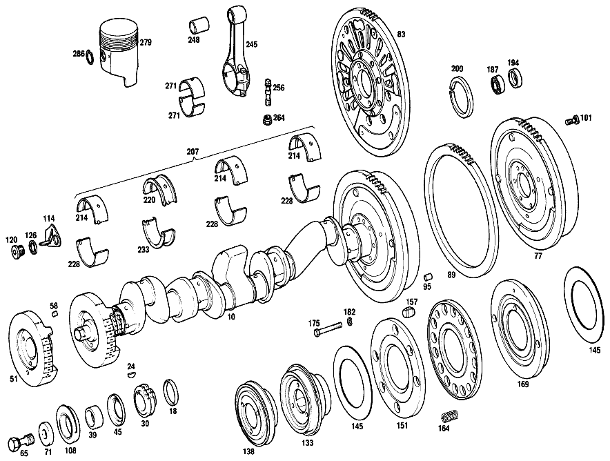

| № | Артикул | Название | Кол. | Примечание | Ограничение |
|---|---|---|---|---|---|
| 10 | A 127 030 21 01 | КОЛЕНВАЛ | - | Коробка передач | |
| 10 | A 127 030 37 01 | КОЛЕНВАЛ | - | Коробка передач | |
| 10 | A 127 030 39 01 | КОЛЕНВАЛ | - | Коробка передач | |
| 10 | A 127 030 61 01 | КОЛЕНВАЛ | - | Коробка передач | |
| 10 | A 127 030 75 01 | КОЛЕНВАЛ | - | Коробка передач | |
| 10 | A 127 030 79 01 | КОЛЕНВАЛ | 1 | Коробка передач | |
| 10 | A 127 030 35 01 | КОЛЕНВАЛ | 1 | Автоматическая коробка переключения передач | |
| 18 | A 180 031 00 52 | - РАСПОРНАЯ ШАЙБА | - | 5.45 MM [001] NO LONGER AVAILABLE INSTEAD 1X615 052 01 03 | |
| 18 | A 180 031 01 52 | - Компенсационное кольцо | - | 5.60 MM [001] NO LONGER AVAILABLE INSTEAD 1X615 052 01 03 | |
| 18 | A 180 031 02 52 | - Компенсационное кольцо | - | 5.75 MM [001] NO LONGER AVAILABLE INSTEAD 1X615 052 01 03 | |
| 18 | A 180 031 03 52 | - РАСПОРНАЯ ШАЙБА | - | 5.90 MM [001] NO LONGER AVAILABLE INSTEAD 1X615 052 01 03 | |
| 18 | A 180 031 04 52 | - РАСПОРНАЯ ШАЙБА | - | 6.05 MM [001] NO LONGER AVAILABLE INSTEAD 1X615 052 01 03 [402] БОЛЬШЕ НЕ ПОСТАВЛЯЕТСЯ | |
| 24 | A 121 991 00 67 | - Cегментная шпонка | 1 | ||
| 30 | A 180 052 02 03 | - РАСПР. ШЕСТЕРНЯ КОЛЕНВАЛА | - | ||
| 30 | A 180 052 08 03 | - РАСПР. ШЕСТЕРНЯ КОЛЕНВАЛА | - | ||
| 30 | A 615 052 01 03 | - РАСПР. ШЕСТЕРНЯ КОЛЕНВАЛА | - | ||
| 30 | A 615 052 02 03 | - Шестерня коленчатого вала | 1 | ||
| 39 | A 180 031 02 51 | - ДИСТАНЦИОННОЕ КОЛЬЦО | - | ||
| 39 | A 180 031 04 51 | - ДИСТАНЦИОННОЕ КОЛЬЦО | - | [033] ELIMINATE:180 031 04 25 | |
| 45 | A 180 031 04 25 | - Маслоотражательное кольцо | - | [034] ELIMINATE:180 031 04 51 | |
| 45 | A 108 031 01 51 | - ДИСТАНЦИОННОЕ КОЛЬЦО | - | ||
| 45 | A 108 031 02 51 | - Проставочное кольцо | 1 | ||
| 51 | A 180 031 13 07 | - Противовес | 1 | BALANCING,90 DEGREES | |
| 51 | A 127 031 10 07 | - ПРОТИВОВЕС | - | ||
| 51 | A 127 031 12 07 | - ПРОТИВОВЕС | 1 | BALANCING,120 DEGREES | |
| 58 | N 900037 008100 | - Установочный штифт | - | ||
| 58 | N 000007 008244 | - Цилиндрический штифт | 2 | ||
| 65 | A 186 031 02 71 | - БОЛТ | - | ||
| 65 | A 621 031 00 71 | - болт | - | [415] ПРИМЕЧ. ПО ЗАМЕНЕ ПРИМЕНИМО ТОЛЬКО ДЛЯ СТОЯЩИХ РЯДОМ ПОЗИЦИЙ | |
| 65 | N 000961 018041 | - Винт | - | ||
| 65 | N 308676 018001 | - Винт с 6-гранной головкой | 1 | ||
| 71 | A 621 031 00 76 | - ШАЙБА | - | ||
| 71 | A 127 993 00 26 | - Тарельчатая пружина | 3 | ||
| 77 | A 127 030 02 05 | - МАХОВИК | - | ||
| 77 | A 127 030 03 05 | - МАХОВИК | 1 | Коробка передач | |
| 83 | A 180 030 21 05 | - МАХОВИК | 1 | Автоматическая коробка переключения передач | |
| 89 | A 180 032 06 05 | - Зубчатый венец | 1 | ||
| 95 | N 000007 010202 | - Цилиндрический штифт | 1 | H8X14 | |
| 101 | A 621 032 00 71 | - БОЛТ | 6 | ||
| 108 | A 180 031 06 81 | - УПЛОТНИТ. КОЛЬЦО | - | ||
| 108 | A 108 031 01 81 | - УПЛОТНИТ. КОЛЬЦО | - | ||
| 108 | A 108 031 04 81 | - УПЛОТНИТ. КОЛЬЦО | - | ||
| 108 | A 008 997 04 47 | - УПЛОТНИТ. КОЛЬЦО | 1 | ||
| 108 | A 008 997 05 47 | - УПЛОТНИТ. КОЛЬЦО | - | ||
| 108 | A 003 997 03 47 | - Сальник без пылезащ.кром. | 1 | ||
| 114 | A 180 032 02 15 | СТРЕЛКА | 1 | ||
| 120 | N 000908 020001 | Резьбовая пробка | 1 | ||
| 126 | N 007603 020102 | Уплотнительное кольцо | - | ||
| 126 | N 007603 020103 | Уплотнительное кольцо | 1 | ||
| 133 | A 127 200 00 05 | ШКИВ | 1 | ||
| 138 | A 127 200 02 05 | ШКИВ | - | ||
| 138 | A 127 200 05 05 | ШКИВ | 1 | ||
| 145 | A 186 035 00 15 | ШЛИФОВАЛЬНЫЙ КРУГ | 2 | ||
| 151 | A 180 035 00 01 | ЗУБЧАТЫЙ ОБОД МАХОВИКА | 2 | ||
| 157 | A 180 035 00 81 | ОПОРА РЕЗИНОВАЯ | 2 | ||
| 164 | A 186 993 29 01 | ПРУЖИНА | 8 | ||
| 169 | A 180 030 08 03 | ДЕМПФЕР | 1 | ||
| 175 | N 000912 008097 | Винт | 3 | ||
| 182 | N 000137 008202 | Пружинная шайба | - | ||
| 182 | N 000137 008204 | Пружинная шайба | - | ||
| 182 | N 000137 008212 | Пружинная шайба | 3 | ||
| 187 | N 000625 006202 | Шарикоподшипник | - | Коробка передач | |
| 187 | A 115 980 00 15 | ПОДШИПНИК РАДИАЛЬНЫЙ | - | Коробка передач | |
| 187 | A 115 980 01 15 | Рад. шарикоподшипник | 1 | Коробка передач | |
| 194 | A 186 031 00 33 | ЗАМОЧНОЕ КОЛЬЦО | - | Коробка передач | |
| 194 | A 189 031 00 33 | Стопорное кольцо | 1 | Коробка передач | |
| 200 | N 900255 068700 | УПЛОТНИТ. КОЛЬЦО | 1 | ||
| 200 | A 001 997 12 41 | Уплотнительное кольцо | 1 | ||
| 207 | A 180 030 30 97 | К-Т ПОДШИПН. КОЛЕНВАЛА | - | ||
| 207 | A 180 586 12 03 | РЕМКОМПЛЕКТ | - | ||
| 207 | A 180 030 00 40 | К-т кор. подш.коленвала | 1 | КОМПЛЕКТ ДЕТАЛЕЙ, НОРМАЛЬН. 60mm | |
| 214 | A 180 033 31 01 | - ВКЛАДЫШ ПОДШИПНИКА К/ВАЛА | - | [402] БОЛЬШЕ НЕ ПОСТАВЛЯЕТСЯ | |
| 220 | A 180 033 28 07 | - ВКЛАДЫШ ПОДШИПНИКА К/ВАЛА | - | [402] БОЛЬШЕ НЕ ПОСТАВЛЯЕТСЯ | |
| 220 | A 180 033 44 07 | - ВКЛАДЫШ ПОДШИПНИКА К/ВАЛА | - | [402] БОЛЬШЕ НЕ ПОСТАВЛЯЕТСЯ | |
| 228 | A 180 033 23 02 | - ВКЛАДЫШ ПОДШИПНИКА К/ВАЛА | - | [402] БОЛЬШЕ НЕ ПОСТАВЛЯЕТСЯ | |
| 233 | A 180 033 38 07 | - ВКЛАДЫШ ПОДШИПНИКА К/ВАЛА | - | [402] БОЛЬШЕ НЕ ПОСТАВЛЯЕТСЯ | |
| 233 | A 180 033 43 07 | - ВКЛАДЫШ ПОДШИПНИКА К/ВАЛА | - | [402] БОЛЬШЕ НЕ ПОСТАВЛЯЕТСЯ | |
| 245 | A 127 030 01 20 | Шатун | 6 | ||
| 245 | A 127 030 23 20 | ШАТУН | - | ||
| 245 | A 127 030 26 20 | ШАТУН | 6 | ||
| 248 | A 127 038 00 50 | - Втулка шатуна | 6 | ||
| 248 | A 127 038 01 50 | - Втулка шатуна | 6 | РЕМОНТ. ИСПОЛНЕНИЕ | |
| 256 | A 186 038 04 71 | - Шатунный болт | 12 | ||
| 256 | A 121 038 03 71 | - БОЛТ | 12 | ||
| 264 | A 182 038 00 72 | - ГАЙКА | 12 | ||
| 271 | A 180 030 10 60 | К-т шатунного подшипника | 1 | КОМПЛЕКТ ДЕТАЛЕЙ, НОРМАЛЬН. 48 MM | |
| 271 | A 127 038 05 10 | ВКЛАДЫШ ШАТУН. ПОДШИПНИКА | - | ||
| 271 | A 127 586 00 03 | РЕМКОМПЛЕКТ | - | ||
| 271 | A 127 030 00 60 | К-т шатунного подшипника | 1 | КОМПЛЕКТ ДЕТАЛЕЙ, НОРМАЛЬН. 48 MM | |
| 271 | A 180 030 11 60 | К-т шатунного подшипника | 1 | КОМПЛЕКТ ДЕТАЛЕЙ, РЕМ. РАЗМЕР I 47.75 MM | |
| 271 | A 127 038 06 10 | ВКЛАДЫШ ШАТУН. ПОДШИПНИКА | - | ||
| 271 | A 127 586 01 03 | РЕМКОМПЛЕКТ | - | ||
| 271 | A 127 030 01 60 | К-т шатунного подшипника | 1 | КОМПЛЕКТ ДЕТАЛЕЙ, РЕМ. РАЗМЕР I 47.75 MM | |
| 271 | A 180 030 12 60 | К-т шатунного подшипника | 1 | КОМПЛЕКТ ДЕТАЛЕЙ, РЕМ. РАЗМЕР II 47.50 MM | |
| 271 | A 127 038 07 10 | ВКЛАДЫШ ШАТУН. ПОДШИПНИКА | - | ||
| 271 | A 127 586 02 03 | РЕМКОМПЛЕКТ | - | ||
| 271 | A 127 030 02 60 | К-т шатунного подшипника | 1 | КОМПЛЕКТ ДЕТАЛЕЙ, РЕМ. РАЗМЕР II 47.5 MM | |
| 271 | A 180 030 13 60 | К-т шатунного подшипника | 1 | КОМПЛЕКТ ДЕТАЛЕЙ, РЕМ. РАЗМЕР III 47.25 MM | |
| 271 | A 127 038 08 10 | ВКЛАДЫШ ШАТУН. ПОДШИПНИКА | - | ||
| 271 | A 127 586 03 03 | РЕМКОМПЛЕКТ | - | ||
| 271 | A 127 030 03 60 | ШАТУННЫЙ ПОДШИПНИК | 1 | КОМПЛЕКТ ДЕТАЛЕЙ, РЕМ. РАЗМЕР III 47.25 MM | |
| 271 | A 180 030 14 60 | К-т шатунного подшипника | 1 | КОМПЛЕКТ ДЕТАЛЕЙ, РЕМ. РАЗМЕР IV 47.00 MM | |
| 271 | A 127 030 04 60 | ШАТУННЫЙ ПОДШИПНИК | 1 | КОМПЛЕКТ ДЕТАЛЕЙ, РЕМ. РАЗМЕР IV 47.00 MM | |
| 279 | A 180 030 08 18 | Поршень | 6 | 80.00\-MM CYLINDER BORE, STANDARD | |
| 286 | A 000 994 24 35 | - Пруж. стопорное кольцо | 12 | [402] БОЛЬШЕ НЕ ПОСТАВЛЯЕТСЯ | |
| N 000007 008204 | - Цилиндрический штифт | 1 | [402] БОЛЬШЕ НЕ ПОСТАВЛЯЕТСЯ | ||
| N 000912 010039 | Винт | 1 | Коробка передач | ||
| N 912004 010102 | Пружинное кольцо | 1 | Коробка передач | ||
| A 130 990 02 40 | ШАЙБА | 1 | Коробка передач | ||
| A 180 030 31 97 | К-Т ПОДШИПН. КОЛЕНВАЛА | - | |||
| A 180 030 01 40 | К-т кор. подш.коленвала | 1 | КОМПЛЕКТ ДЕТАЛЕЙ, РЕМ. РАЗМЕР I 59.75 MM | ||
| A 180 033 32 01 | - ВКЛАДЫШ ПОДШИПНИКА К/ВАЛА | - | [417] БОЛЬШЕ НЕ ПОСТАВЛЯЕТСЯ, ЗАКАЗЫВАТЬ КОМПЛЕКТ ПОСТАВКИ [402] БОЛЬШЕ НЕ ПОСТАВЛЯЕТСЯ | ||
| A 180 033 29 07 | - ВКЛАДЫШ ПОДШИПНИКА К/ВАЛА | - | [417] БОЛЬШЕ НЕ ПОСТАВЛЯЕТСЯ, ЗАКАЗЫВАТЬ КОМПЛЕКТ ПОСТАВКИ [402] БОЛЬШЕ НЕ ПОСТАВЛЯЕТСЯ | ||
| A 180 033 24 02 | - ВКЛАДЫШ ПОДШИПНИКА К/ВАЛА | - | [417] БОЛЬШЕ НЕ ПОСТАВЛЯЕТСЯ, ЗАКАЗЫВАТЬ КОМПЛЕКТ ПОСТАВКИ [402] БОЛЬШЕ НЕ ПОСТАВЛЯЕТСЯ | ||
| A 180 033 39 07 | - ВКЛАДЫШ ПОДШИПНИКА К/ВАЛА | - | [417] БОЛЬШЕ НЕ ПОСТАВЛЯЕТСЯ, ЗАКАЗЫВАТЬ КОМПЛЕКТ ПОСТАВКИ [402] БОЛЬШЕ НЕ ПОСТАВЛЯЕТСЯ | ||
| A 180 030 32 97 | К-Т ПОДШИПН. КОЛЕНВАЛА | - | |||
| A 180 030 02 40 | К-т кор. подш.коленвала | 1 | КОМПЛЕКТ ДЕТАЛЕЙ, РЕМ. РАЗМЕР II 59.50 MM | ||
| A 180 033 33 01 | - ВКЛАДЫШ ПОДШИПНИКА К/ВАЛА | - | [402] БОЛЬШЕ НЕ ПОСТАВЛЯЕТСЯ | ||
| A 180 033 30 07 | - ВКЛАДЫШ ПОДШИПНИКА К/ВАЛА | - | [402] БОЛЬШЕ НЕ ПОСТАВЛЯЕТСЯ | ||
| A 180 033 25 02 | - ВКЛАДЫШ ПОДШИПНИКА К/ВАЛА | - | [402] БОЛЬШЕ НЕ ПОСТАВЛЯЕТСЯ | ||
| A 180 033 40 07 | - ВКЛАДЫШ ПОДШИПНИКА К/ВАЛА | - | [402] БОЛЬШЕ НЕ ПОСТАВЛЯЕТСЯ | ||
| A 180 030 33 97 | К-Т ПОДШИПН. КОЛЕНВАЛА | - | |||
| A 180 030 03 40 | К-т кор. подш.коленвала | 1 | КОМПЛЕКТ ДЕТАЛЕЙ, РЕМ. РАЗМЕР III 59.25 MM | ||
| A 180 033 34 01 | - ВКЛАДЫШ ПОДШИПНИКА К/ВАЛА | - | [402] БОЛЬШЕ НЕ ПОСТАВЛЯЕТСЯ | ||
| A 180 033 31 07 | - ВКЛАДЫШ ПОДШИПНИКА К/ВАЛА | - | [402] БОЛЬШЕ НЕ ПОСТАВЛЯЕТСЯ | ||
| A 180 033 26 02 | - ВКЛАДЫШ ПОДШИПНИКА К/ВАЛА | - | [402] БОЛЬШЕ НЕ ПОСТАВЛЯЕТСЯ | ||
| A 180 033 41 07 | - ВКЛАДЫШ ПОДШИПНИКА К/ВАЛА | - | [402] БОЛЬШЕ НЕ ПОСТАВЛЯЕТСЯ | ||
| A 180 030 34 97 | К-Т ПОДШИПН. КОЛЕНВАЛА | - | |||
| A 180 586 16 03 | РЕМКОМПЛЕКТ | - | |||
| A 180 030 04 40 | К-т кор. подш.коленвала | 1 | КОМПЛЕКТ ДЕТАЛЕЙ, РЕМ. РАЗМЕР IV 59.00 MM | ||
| A 180 033 35 01 | - ВКЛАДЫШ ПОДШИПНИКА К/ВАЛА | - | [402] БОЛЬШЕ НЕ ПОСТАВЛЯЕТСЯ | ||
| A 180 033 32 07 | - ВКЛАДЫШ ПОДШИПНИКА К/ВАЛА | - | [402] БОЛЬШЕ НЕ ПОСТАВЛЯЕТСЯ | ||
| A 180 033 27 02 | - ВКЛАДЫШ ПОДШИПНИКА К/ВАЛА | - | [402] БОЛЬШЕ НЕ ПОСТАВЛЯЕТСЯ | ||
| A 180 033 42 07 | - ВКЛАДЫШ ПОДШИПНИКА К/ВАЛА | - | [402] БОЛЬШЕ НЕ ПОСТАВЛЯЕТСЯ | ||
| A 000 030 41 24 | - Комплект поршневых колец | 6 | К\-Т ДЕТАЛЕЙ [017] TO 127 030 05 17/10 17/25 17,180 030 66 17 | ||
| A 000 030 60 24 | - Комплект поршневых колец | 6 | К\-Т ДЕТАЛЕЙ [018] TO 127 030 19 18/24 18,180 030 08 18 | ||
| A 000 030 23 24 | - КОЛЬЦО ПОРШНЕВОЕ | 6 | К\-Т ДЕТАЛЕЙ [019] TO 127 030 73 17/78 17 | ||
| A 180 030 09 18 | ПОРШЕНЬ | 6 | 80.25\-MM CYLINDER BORE,INTERMEDIATE SIZE | ||
| A 000 030 42 24 | - КОЛЬЦО ПОРШНЕВОЕ | 6 | К\-Т ДЕТАЛЕЙ [402] БОЛЬШЕ НЕ ПОСТАВЛЯЕТСЯ [020] TO 127 030 06 17/11 17/26 17,180 030 67 17 | ||
| A 000 030 61 24 | - КОЛЬЦО ПОРШНЕВОЕ | 6 | К\-Т ДЕТАЛЕЙ [021] TO 127 030 20 18/25 18,180 030 09 18 | ||
| A 001 030 52 24 | - КОЛЬЦО ПОРШНЕВОЕ | 6 | К\-Т ДЕТАЛЕЙ 80.25 MM [022] TO 127 030 74 17/79 17 | ||
| A 000 994 24 35 | - Пруж. стопорное кольцо | 12 | [402] БОЛЬШЕ НЕ ПОСТАВЛЯЕТСЯ | ||
| A 180 030 10 18 | Поршень | 6 | 80.50 MM CYLINDER BORE, REPAIR SIZE I | ||
| A 000 030 43 24 | - Комплект поршневых колец | 6 | К\-Т ДЕТАЛЕЙ [023] TO 127 030 07 17/12 17/27 17,180 030 68 17 | ||
| A 000 030 62 24 | - Поршневое кольцо | 6 | К\-Т ДЕТАЛЕЙ [417] БОЛЬШЕ НЕ ПОСТАВЛЯЕТСЯ, ЗАКАЗЫВАТЬ КОМПЛЕКТ ПОСТАВКИ [024] TO 127 030 21 18/26 18,180 030 10 18 | ||
| A 000 030 24 24 | - КОЛЬЦО ПОРШНЕВОЕ | 6 | К\-Т ДЕТАЛЕЙ [025] TO 127 030 75 17/80 17 | ||
| A 000 994 24 35 | - Пруж. стопорное кольцо | 12 | [402] БОЛЬШЕ НЕ ПОСТАВЛЯЕТСЯ | ||
| A 180 030 11 18 | Поршень | 6 | 81.00\-MM CYLINDER BORE, REPAIR SIZE II | ||
| A 000 030 44 24 | - Комплект поршневых колец | 6 | К\-Т ДЕТАЛЕЙ [417] БОЛЬШЕ НЕ ПОСТАВЛЯЕТСЯ, ЗАКАЗЫВАТЬ КОМПЛЕКТ ПОСТАВКИ [026] TO 127 030 08 17/13 17/28 17,180 030 69 17 | ||
| A 000 030 63 24 | - КОЛЬЦО ПОРШНЕВОЕ | 6 | К\-Т ДЕТАЛЕЙ [027] TO 127 030 22 18/27 18,180 030 11 18 | ||
| A 000 030 25 24 | - КОЛЬЦО ПОРШНЕВОЕ | 6 | К\-Т ДЕТАЛЕЙ [028] TO 127 030 76 17/81 17 | ||
| A 000 994 24 35 | - Пруж. стопорное кольцо | 12 | [402] БОЛЬШЕ НЕ ПОСТАВЛЯЕТСЯ | ||
| A 180 030 12 18 | Поршень | 6 | 81.50\-MM CYLINDER BORE, REPAIR SIZE III | ||
| A 000 030 45 24 | - КОЛЬЦО ПОРШНЕВОЕ | 6 | К\-Т ДЕТАЛЕЙ [402] БОЛЬШЕ НЕ ПОСТАВЛЯЕТСЯ [029] TO 127 030 09 17/14 17/29 17,180 030 70 17 | ||
| A 000 030 64 24 | - КОЛЬЦО ПОРШНЕВОЕ | 6 | К\-Т ДЕТАЛЕЙ [030] TO 127 030 23 18/28 18,180 030 12 18 | ||
| A 000 030 26 24 | - КОЛЬЦО ПОРШНЕВОЕ | 6 | К\-Т ДЕТАЛЕЙ [031] TO 127 030 77 17/82 17 | ||
| A 000 994 24 35 | - Пруж. стопорное кольцо | 12 | [402] БОЛЬШЕ НЕ ПОСТАВЛЯЕТСЯ |
Позиций: 157 · подписано на схемах: 105 · колесо — плавный зум в курсор, перетаскивание — пан, двойной клик — зум, клик по артикулу — скопировать.